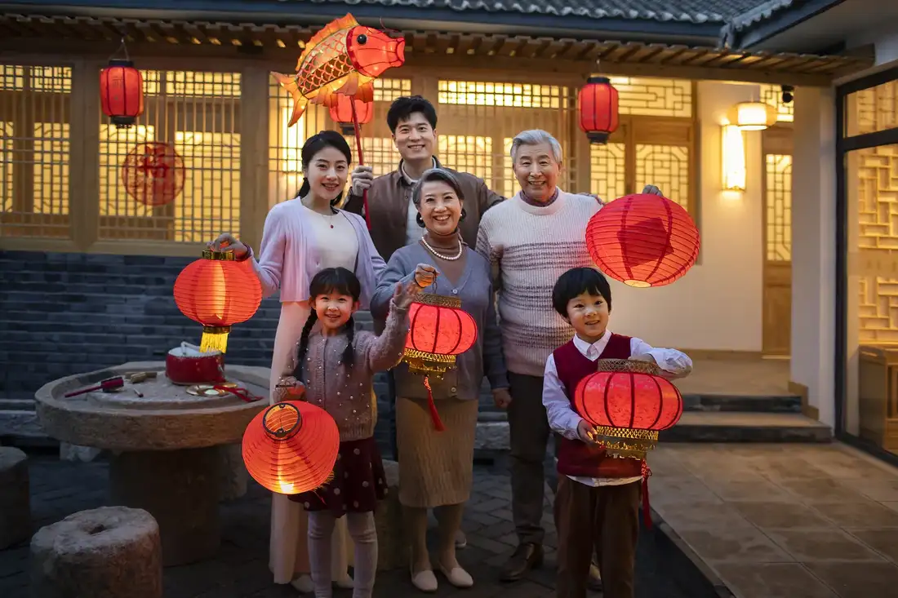
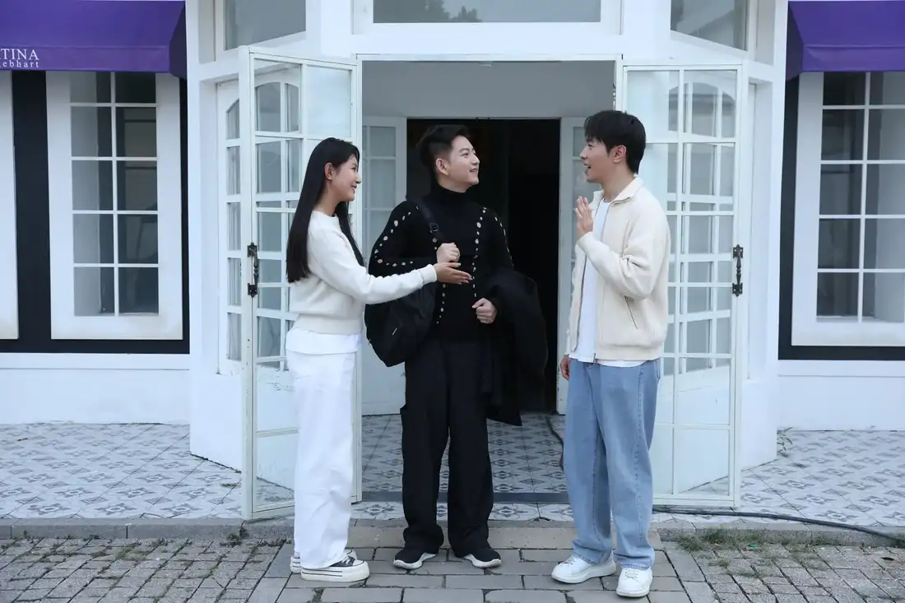
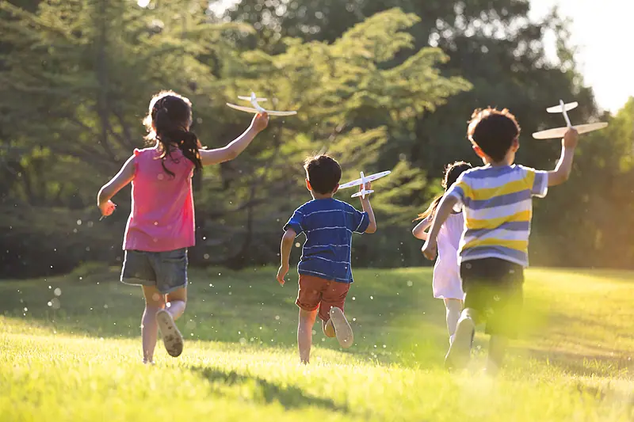
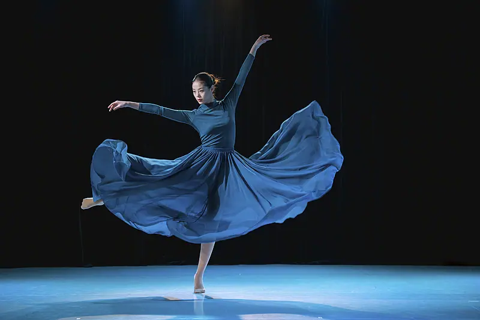

Giáo trình HSK 2 · Lesson 14一个人过年多没意思啊
Yí ge rén guònián duō méi yìsi a
Một mình ăn Tết buồn quá!
Mục tiêu bài khóa
Sau bài học, người học có thể mô tả sự tồn tại, diễn đạt hướng di chuyển và dùng 多 để cảm thán mức độ.
某处存在某人或某物Diễn đạt ở một nơi nào đó có người hoặc vật đang tồn tại.
复合趋向补语Sử dụng bổ ngữ xu hướng kép như 跑上来 và 走过去.
副词“多”Dùng 多 trong câu cảm thán để nhấn mạnh mức độ.
Khởi động · 热身
Chọn từ rồi chọn đúng hình ảnh tương ứng.
💡 Hãy chọn một từ trước.
Từ vựng · 生词
Mặt trước có từ, nghĩa, loại từ và nút phát/dừng. Mặt sau có hình ảnh và ví dụ theo PowerPoint.
站
zhàn
đứng; đứng lên
động từChạm vùng trống để lật thẻ

别站着了，快请坐。 🔊Bié zhànzhe le, kuài qǐng zuò.
Đừng đứng nữa, mau ngồi xuống. 你站在这儿等我一会儿。 🔊Nǐ zhàn zài zhèr děng wǒ yíhuìr.
Bạn đứng ở đây đợi tôi một lát. 包
bāo
ví; cặp; túi; gói
danh từ / động từ / lượng từChạm vùng trống để lật thẻ
我把包放在桌子上了。 🔊Wǒ bǎ bāo fàng zài zhuōzi shàng le.
Tôi đã đặt cái cặp lên bàn rồi. 你的包里面有什么？ 🔊Nǐ de bāo lǐmiàn yǒu shénme?
Trong cặp của bạn có gì? 过年
guònián
ăn Tết; đón năm mới
động từChạm vùng trống để lật thẻ

过年的时候，我要回北京。 🔊Guònián de shíhou, wǒ yào huí Běijīng.
Khi ăn Tết, tôi sẽ về Bắc Kinh. 孩子们最喜欢过年了。 🔊Háizimen zuì xǐhuan guònián le.
Trẻ em thích đón Tết nhất. 没意思
méi yìsi
tẻ nhạt; buồn; không thú vị
tính từChạm vùng trống để lật thẻ
我觉得看电视没意思。 🔊Wǒ juéde kàn diànshì méi yìsi.
Tôi thấy xem tivi không thú vị. 一个人在家真没意思。 🔊Yí ge rén zài jiā zhēn méi yìsi.
Ở nhà một mình thật là chán. 位
wèi
vị; lượng từ tôn trọng người
lượng từChạm vùng trống để lật thẻ

这位是我的中文老师。 🔊Zhè wèi shì wǒ de Zhōngwén lǎoshī.
Đây là giáo viên tiếng Trung của tôi. 您二位想要吃点儿什么？ 🔊Nín èr wèi xiǎng yào chī diǎnr shénme?
Hai vị muốn ăn gì ạ? 前面
qiánmiàn
phía trước; đằng trước
danh từChạm vùng trống để lật thẻ
小明坐在我前面。 🔊Xiǎomíng zuò zài wǒ qiánmiàn.
Tiểu Minh ngồi phía trước tôi. 超市在学校前面。 🔊Chāoshì zài xuéxiào qiánmiàn.
Siêu thị ở phía trước trường học. 房子
fángzi
căn nhà; ngôi nhà
danh từChạm vùng trống để lật thẻ
这是我画的房子。 🔊Zhè shì wǒ huà de fángzi.
Đây là ngôi nhà tôi vẽ. 我家的房子很漂亮。 🔊Wǒ jiā de fángzi hěn piàoliang.
Nhà của tôi rất đẹp. 小孩儿
xiǎoháir
trẻ con; trẻ em
danh từChạm vùng trống để lật thẻ

公园里有很多小孩儿。 🔊Gōngyuán lǐ yǒu hěn duō xiǎoháir.
Trong công viên có rất nhiều trẻ em. 那个小孩儿笑得特别开心。 🔊Nàge xiǎoháir xiào de tèbié kāixīn.
Đứa trẻ kia cười rất vui vẻ. 女孩儿
nǚháir
cô gái; cô bé; bé gái
danh từChạm vùng trống để lật thẻ
那个穿蓝衣服的女孩儿是我女儿。 🔊Nàge chuān lán yīfu de nǚháir shì wǒ nǚ’ér.
Cô bé mặc áo xanh kia là con gái tôi. 我不认识那个女孩儿。 🔊Wǒ bú rènshi nàge nǚháir.
Tôi không quen cô bé đó. 姓
xìng
họ; mang họ
động từChạm vùng trống để lật thẻ

你姓什么？我姓李。 🔊Nǐ xìng shénme? Wǒ xìng Lǐ.
Bạn họ gì? Tôi họ Lý. 我的老师姓王。 🔊Wǒ de lǎoshī xìng Wáng.
Giáo viên của tôi họ Vương. 眼睛
yǎnjing
mắt; đôi mắt
danh từChạm vùng trống để lật thẻ
她的眼睛很漂亮。 🔊Tā de yǎnjing hěn piàoliang.
Mắt của cô ấy rất đẹp. 你的眼睛怎么了？ 🔊Nǐ de yǎnjing zěnme le?
Mắt của bạn bị sao vậy? 跳舞
tiàowǔ
nhảy múa; khiêu vũ
động từChạm vùng trống để lật thẻ

我很喜欢跳舞，但是跳得不好。 🔊Wǒ hěn xǐhuan tiàowǔ, dànshì tiào de bù hǎo.
Tôi rất thích nhảy múa nhưng nhảy không giỏi. 她们跳完舞就去休息了。 🔊Tāmen tiào wán wǔ jiù qù xiūxi le.
Họ nhảy xong rồi đi nghỉ. Bài khóa · 课文
Ảnh ngữ cảnh bên trái, hội thoại bên phải. Bài khóa 4 trình bày đúng dạng đoạn nhật ký.
Tương tác đóng vai
Chọn bài khóa và nhân vật. Lời của vai đã chọn sẽ được ẩn; phần này chỉ hiển thị chữ Hán.
Củng cố từ vựng
Lật đáp án từ vựng rồi hoàn thành câu hỏi đọc hiểu.
Câu hỏi đọc hiểu
Mẫu câu cần nhớ: 楼下站着一个人。她经常跑上来找我玩。一个人过年多没意思啊！